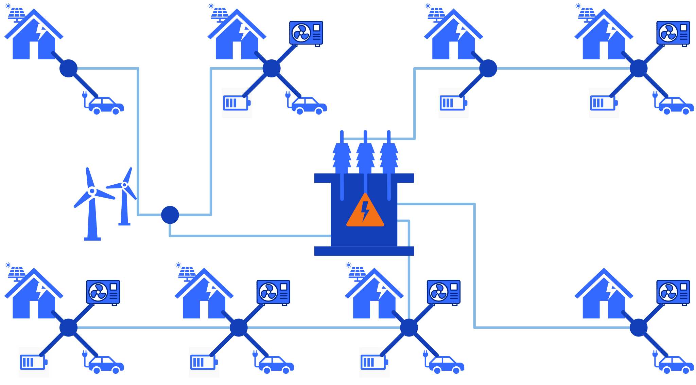

Residential grid congestion

Goal
model impact of residnetial grid connection issues on charging profiles charging demand can be high a the same time as other demand is high, so chargign session demands might be delayed, reduced or outrighht denied This will impact they way vehicles charge and change the charging profiles
Look at residnetial neighbourhood because it is likely that such conflicts will occur (simultaeous demand, also the fact that in other locations the grid might besolely dedicated to EV charging)
WHen to use
The parameter include_residential_grid_congestion (set to either true or false)
in the [grid] section of your scenario tells if you are using this modelling or not.
Set it to true if you want to add residetial grid congestion issues to our profile.
If you don't want to include such effects, or if you want to investigate them in another model (fr example an optimisation one) using the profiles provided by ChaProEV, or if it is not relevant (e.g. vehicles such as busses that charge in dedidcated locations)
This is mostly meant for cars
Approach
One transformer for the neighbourhood with a given capacity and a certain amount of lines, ach having its own capacity (sum of lines capacity is transformer capacity) This provides two constraints. One at transformer level, and one at each level so issues could come at the whole neighbourhood level, as well as at a more local level (e.g. a street has many EVs and their users charge at the same time as they have elecxtricity demand for other purposes)
Parameters
They are in the [grid] section of your scenario
[grid]
include_residential_grid_congestion = true
transformer_capacity_kW = 200
amount_of_lines = 10
line_capacity_to_average_ratio_min = 0.8
line_capacity_to_average_ratio_typical = 1.0
line_capacity_to_average_ratio_max = 1.2
Transformer capacity
The capacity of the transformer (in kW)
Amount of lines
The amounts of lines connected to the transformer.
Line capacity to average ration
These three parameters provide a range for drawing each line's capacity by fluctuating around dividing the transformer equally within the lines.